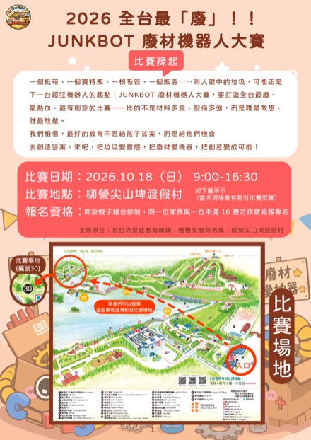
一個紙箱、一個寶特瓶、一根吸管、一個瓶蓋⋯⋯別人眼中的垃圾，可能正是下一台超狂機器人的起點！Junkbot 廢材機器人大賽，要打造全台最廢、最熱血、最有創意的比賽——比的不是材料多貴、設備多強，而是誰最敢想、誰最敢做。
我們相信，最好的教育不是給孩子答案，而是給他們機會去創造答案。來吧，把垃圾變靈感、把廢材變神器，把創意變成可能！本賽事核心呼應聯合國永續發展目標 SDG 12 — 責任消費與生產，讓孩子在玩中學、做中懂。
本屆設有兩大競賽項目，每隊皆可參加，兩項成績互不影響、分別頒獎，盡情展現創意與技術！
以創意與美感為核心，結合主題、造型、機構與敘事元素打造作品。經靜態評分後，每隊有 2 分鐘舞台分享時間。
2026 主題：吉聚台灣・百鄉萌物在 90×80cm 的高台擂台上，兩台廢材機器人正面對決，將對手推出界即獲勝。採單敗淘汰、每場限時 1 分鐘，緊張刺激！
單敗淘汰・推出擂台定勝負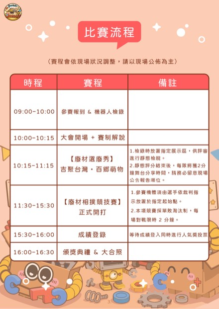
（賽程會依現場狀況調整，請以現場公佈為主）
| 時程 | 賽程 | 備註 |
|---|---|---|
| 09:00–10:00 | 參賽報到 & 機器人檢錄 | — |
| 10:00–10:15 | 大會開場 ＋ 賽制解說 | — |
| 10:15–11:15 | 【廢材選廢秀】吉聚台灣・百鄉萌物 | 靜態檢視＋每隊 2 分鐘舞台分享 |
| 11:30–15:30 | 【廢材相撲競技賽】正式開打 | 單敗淘汰，每場限時 1 分鐘 |
| 15:30–16:00 | 成績登錄 | 同時進行人氣獎投票 |
| 16:00–16:30 | 頒獎典禮 & 大合照 | — |
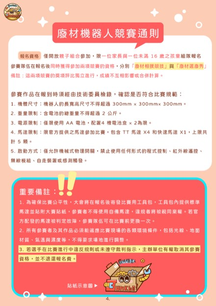
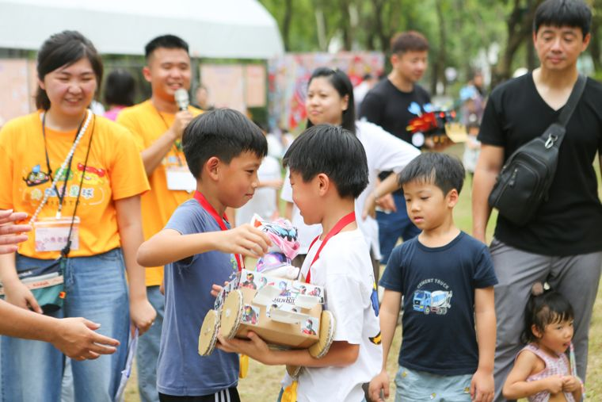
參賽作品於報到時須經技術委員檢錄，確認符合下列規範才能參賽：
含機器人長寬高，不可超過 300 × 300 × 300 mm。
含電池的機體總重，不得超過 2 公斤。
僅限使用 AA 電池，配 4 槽電池盒 ×2 為限。
限官方提供之馬達參加比賽，包含 TT 馬達 ×4，上限共計 4 顆。
僅允許機械式物理開關啟動，禁止任何形式的程式控制、紅外線遙控、無線模組、自走裝置或感測觸發。
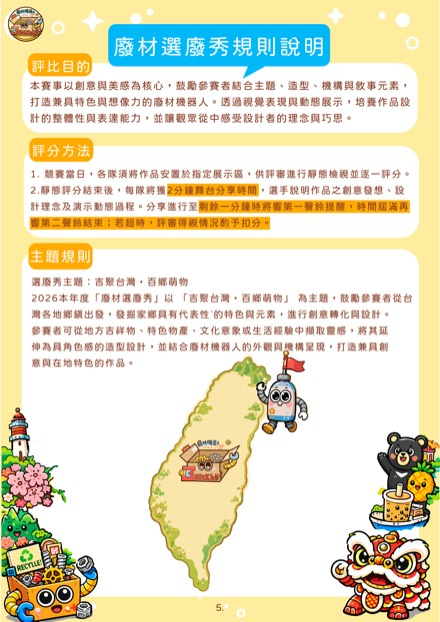
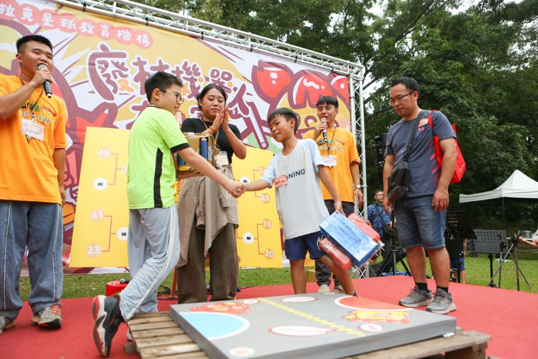
以創意與美感為核心，鼓勵參賽者結合主題、造型、機構與敘事元素，打造兼具特色與想像力的廢材機器人，培養作品設計的整體性與表達能力，並讓觀眾從中感受設計者的理念與巧思。
競賽當日各隊將作品安置於指定展示區，供評審進行靜態檢視與逐一評分。
每隊 2 分鐘舞台分享，說明創意發想與設計巧思。剩餘 1 分鐘響第一響鈴提醒，時間屆滿響第二響鈴結束；若超時，評審得視情況予以扣分。
高台型長方形平台，尺寸 90cm（寬）× 80cm（長），高度 5cm，設置於平整地面，無邊框或護欄設計。
場地兩側設紅色與藍色半圓形起始區。開賽前，參賽機體須完整置入所屬顏色的半圓區域內，不得超出，否則不得啟動。
場地中央設黃色中線作為視覺分隔輔助，不具阻擋或限制功能，開賽後雙方機體可自由跨越。
以整體跌落平台為準：機體任一部位完整脫離平台並觸及地面，即視為出界；若仍有任何部位留在平台上，則不構成出界。
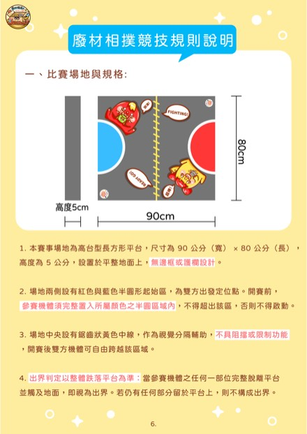
※ 若雙方同時出界，或同時停擺，重賽一次；每場對戰最多重賽一次，若重賽後仍難以判定，則由裁判依場上狀況判定勝負。
※ 若雙方因互相撞擊、牽制而暫時不動，但雙方輪子皆仍有嘗試移動，不算停擺，比賽繼續進行。
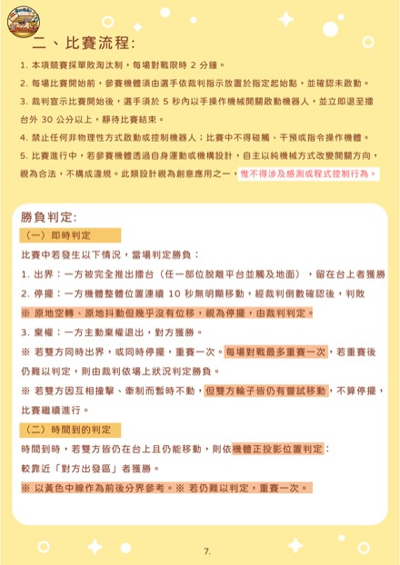
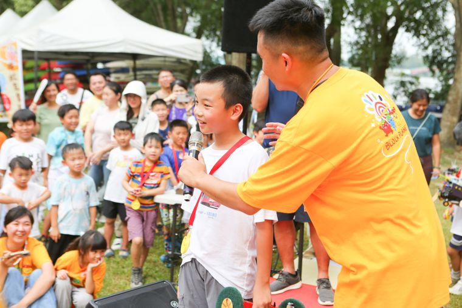
若參賽機體於預備區內臨時失效，經裁判確認後，該隊可申請將比賽順延至同輪最後一場，並獲得至少 5 分鐘維修時間，每隊僅限申請一次。若順延後仍無法恢復機體功能，視同棄權，對手無須出賽即自動晉級。
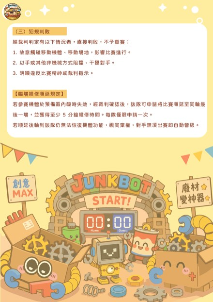
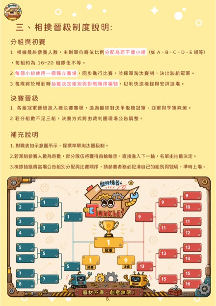
依最終參賽人數，依比例分為若干小組（如 A／B／C／D／E 等），每組以 16–20 隊為佳，組內單敗淘汰決出組冠軍；每隊抽籤決定組別與對戰順序編號。
各組冠軍晉級總決賽，透過最終決戰爭取總冠軍、亞軍與季軍榮銜。若分組數不足三組，決賽方式將由裁判團現場公告調整。
若某組參賽人數為奇數，部分隊伍可能獲得首輪輪空，直接進入下一輪，名單由抽籤決定。請參賽者務必記住自己的組別與號碼，準時上場。
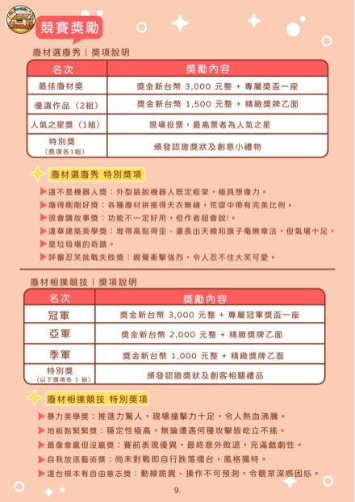
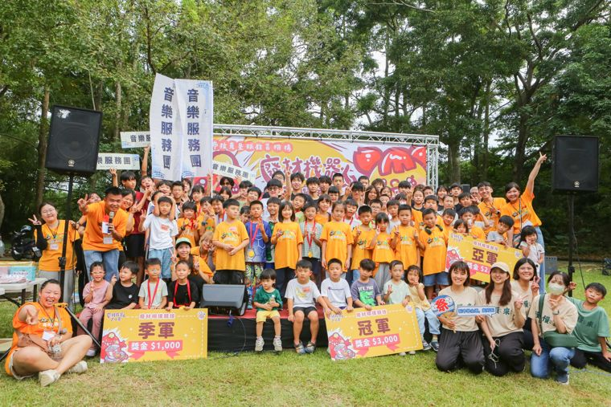
| 名次 | 獎項內容 |
|---|---|
| 最佳廢材獎 | NT$3,000 ＋ 專屬獎座 |
| 優選作品（2 組） | NT$1,500 ＋ 精緻獎牌 |
| 人氣之星（1 組） | 現場投票最高票者，最佳人氣之星 |
| 特別獎（若干） | 頒發認證獎狀 ＋ 創意小禮物 |
| 名次 | 獎項內容 |
|---|---|
| 冠軍 | NT$3,000 ＋ 專屬冠軍盃獎座 |
| 亞軍 | NT$2,000 ＋ 精緻獎牌 |
| 季軍 | NT$1,000 ＋ 精緻獎牌 |
| 特別獎（1 組以上） | 頒發認證獎狀 ＋ 創客相關禮品 |
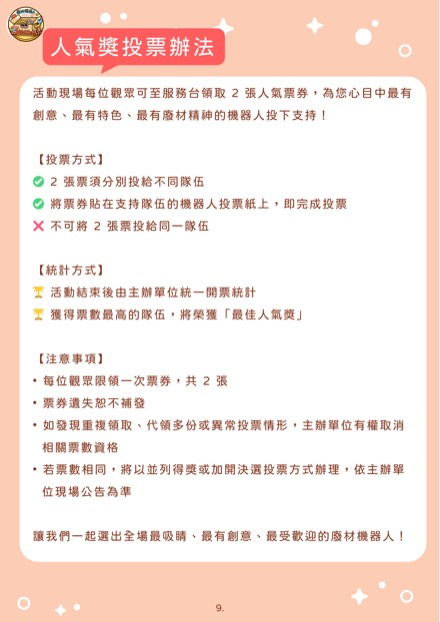
活動現場每位觀眾可至服務台領取 2 張人氣票券，為心目中最有創意、最有特色、最有廢材精神的機器人投下支持！
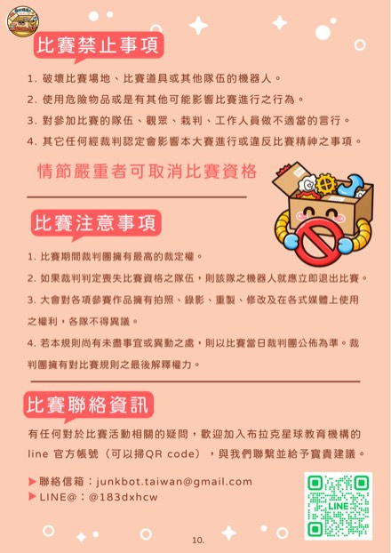
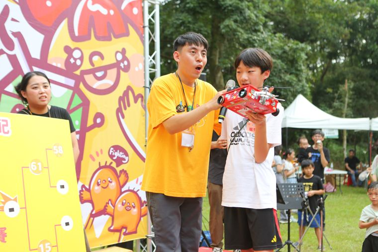
有任何對於比賽活動相關的疑問，歡迎加入布拉克星球教育機構 LINE 官方帳號與我們聯繫：
{kind=link}
{kind=link}
{kind=link}
{kind=link}
{kind=link}
{kind=link}
{kind=link}
{kind=link}
{kind=link}
{kind=link}
{kind=link}